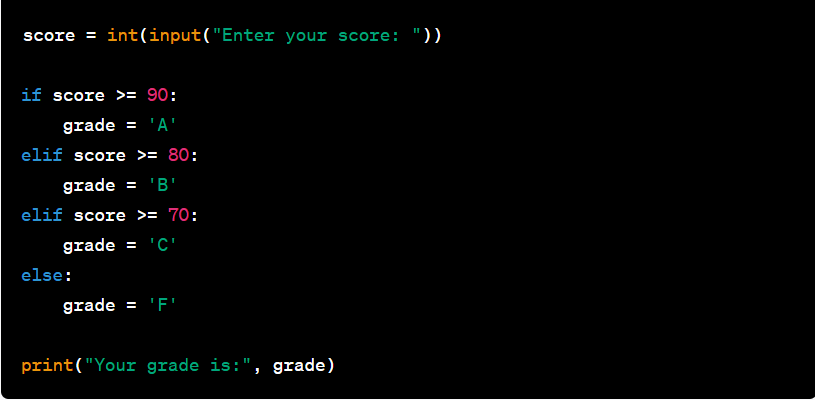

Pildi järgi on antud tavaline Python if, elif, else kood mis näitab, milline näeb välja tavaline if, elif, else kood. See on väga kasulik, kui me tahame, et meie kood annaks eraldi vastuse olenevalt väärtusest.
Kuidas see töötab? kõige pealt, me teeme väärtuse. Siin on antud väärtuseks "score" ja see on võrdne int(input("Enter your score: ")). See teeb terminali teksti "Enter your score: " jaselle sisse saab kirjutada. Selelks et see kood töötaks, tuleb kirjutada numbriga arv.
All pool "score" on meil if, elif, else. Need annavad terminali tulemuse, olenevalt mis me panime enda tulemuseks. Nt kui me panime enda tulemuseks 82, siis printitakse meile terminali lause "Your score is: B". Kuna 82 on suurem kui 80 ja see annab meile B. Kui me paneks alla 70 score, siis tulemus oleks "Your score is: F".